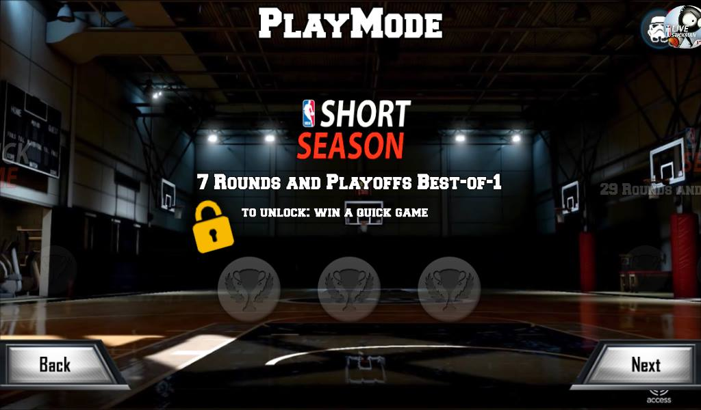

LIVE Stickman LJT Update
LIVE Stickman is a modified game of Stickman Basketball. The original game was created by the Djinnworks GmbH. In this modified game you can see a lot of improvements from the default Stickman Basketball Game to NBA LIVE Game. I'm not claiming this game, I'm just making the game more exciting to play.
☑️ Offline (No internet access)
Credits:
• Djinnworks GmbH
• NBA2K Live 16
• Lance Rexus
• Along Apostol Ferrer
Download
